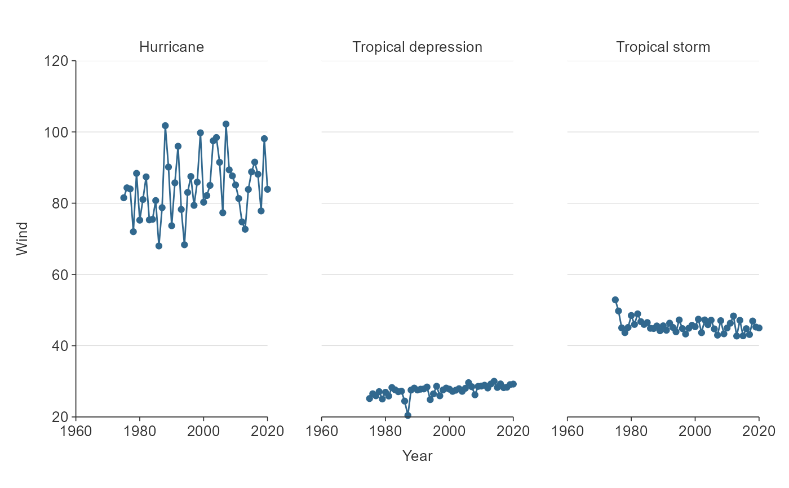

Line ggplot that is facetted, but not coloured.
gg_line_facet( data, x_var, y_var, facet_var, text_var = NULL, pal = pal_viridis_reorder(1), alpha_line = 1, alpha_point = 1, size_point = 1.5, size_line = 0.5, title = NULL, title_wrap = 80, subtitle = NULL, subtitle_wrap = 80, x_balance = FALSE, x_breaks_n = 2, x_expand = NULL, x_labels = NULL, x_na_rm = FALSE, x_rev = FALSE, x_title = NULL, x_title_wrap = 50, x_zero = FALSE, x_zero_line = NULL, y_balance = FALSE, y_breaks_n = 3, y_expand = c(0, 0), y_labels = scales::label_comma(), y_na_rm = FALSE, y_title = NULL, y_title_wrap = 50, y_zero = FALSE, y_zero_line = NULL, facet_labels = snakecase::to_sentence_case, facet_na_rm = FALSE, facet_ncol = NULL, facet_nrow = NULL, facet_rev = FALSE, facet_scales = "fixed", caption = NULL, caption_wrap = 80, theme = gg_theme(gridlines_h = TRUE) )
| data | An ungrouped summarised tibble or dataframe in a structure to be plotted untransformed. Required input. |
|---|---|
| x_var | Unquoted variable to be on the x scale (i.e. character, factor, logical, numeric, date or datetime). Required input. |
| y_var | Unquoted numeric variable to be on the y scale. Required input. |
| facet_var | Unquoted categorical variable to facet the data by. Required input. |
| text_var | Unquoted variable to be used as a customised tooltip in combination with plotly::ggplotly(plot, tooltip = "text"). Defaults to NULL. |
| pal | Character vector of hex codes. |
| alpha_line | The opacity of the line. Defaults to 1. |
| alpha_point | The opacity of the points. |
| size_point | Size of points. Defaults to 1.5. |
| size_line | Size of lines. Defaults to 0.75. |
| title | Title string. |
| title_wrap | Number of characters to wrap the title to. Defaults to 100. |
| subtitle | Subtitle string. |
| subtitle_wrap | Number of characters to wrap the subtitle to. Defaults to 100. |
| x_balance | For a numeric x variable, add balance to the x scale so that zero is in the centre. Defaults to FALSE. |
| x_breaks_n | For a numeric or date x variable, the desired number of intervals on the x scale, as calculated by the pretty algorithm. Defaults to 2. |
| x_expand | A vector of range expansion constants used to add padding to the x scale, as per the ggplot2 expand argument in ggplot2 scales functions. |
| x_labels | A function or named vector to modify x scale labels. If NULL, categorical variable labels are converted to sentence case. Use ggplot2::waiver() to keep x labels untransformed. |
| x_na_rm | TRUE or FALSE of whether to include x_var NA values. Defaults to FALSE. |
| x_rev | For a categorical x variable, TRUE or FALSE of whether the x variable variable is reversed. Defaults to FALSE. |
| x_title | X scale title string. Defaults to NULL, which converts to sentence case with spaces. Use "" if you would like no title. |
| x_title_wrap | Number of characters to wrap the x title to. Defaults to 50. |
| x_zero | For a numeric x variable, TRUE or FALSE of whether the minimum of the x scale is zero. Defaults to FALSE. |
| x_zero_line | For a numeric x variable, TRUE or FALSE of whether to add a zero reference line to the x scale. Defaults to TRUE if there are positive and negative values in x_var. Otherwise defaults to FALSE. |
| y_balance | For a numeric y variable, add balance to the y scale so that zero is in the centre of the y scale. |
| y_breaks_n | For a numeric or date x variable, the desired number of intervals on the x scale, as calculated by the pretty algorithm. Defaults to 4. |
| y_expand | A vector of range expansion constants used to add padding to the y scale, as per the ggplot2 expand argument in ggplot2 scales functions. |
| y_labels | A function or named vector to modify y scale labels. Use ggplot2::waiver() to keep y labels untransformed. |
| y_na_rm | TRUE or FALSE of whether to include y_var NA values. Defaults to FALSE. |
| y_title | y scale title string. Defaults to NULL, which converts to sentence case with spaces. Use "" if you would like no title. |
| y_title_wrap | Number of characters to wrap the y title to. Defaults to 50. |
| y_zero | For a numeric y variable, TRUE or FALSE of whether the minimum of the y scale is zero. Defaults to TRUE. |
| y_zero_line | For a numeric y variable, TRUE or FALSE whether to add a zero reference line to the y scale. Defaults to TRUE if there are positive and negative values in y_var. Otherwise defaults to FALSE. |
| facet_labels | A function or named vector to modify facet scale labels. Defaults to converting labels to sentence case. Use ggplot2::waiver() to keep facet labels untransformed. |
| facet_na_rm | TRUE or FALSE of whether to include facet_var NA values. Defaults to FALSE. |
| facet_ncol | The number of columns of facetted plots. |
| facet_nrow | The number of rows of facetted plots. |
| facet_rev | TRUE or FALSE of whether the facet variable variable is reversed. Defaults to FALSE. |
| facet_scales | Whether facet_scales should be "fixed" across facets, "free" in both directions, or free in just one direction (i.e. "free_x" or "free_y"). Defaults to "fixed". |
| caption | Caption title string. |
| caption_wrap | Number of characters to wrap the caption to. Defaults to 80. |
| theme | A ggplot2 theme. |
A ggplot object.
library(simplevis) library(dplyr) plot_data <- storms %>% group_by(year, status) %>% summarise(wind = mean(wind))#>gg_line_facet(plot_data, x_var = year, y_var = wind, facet_var = status)